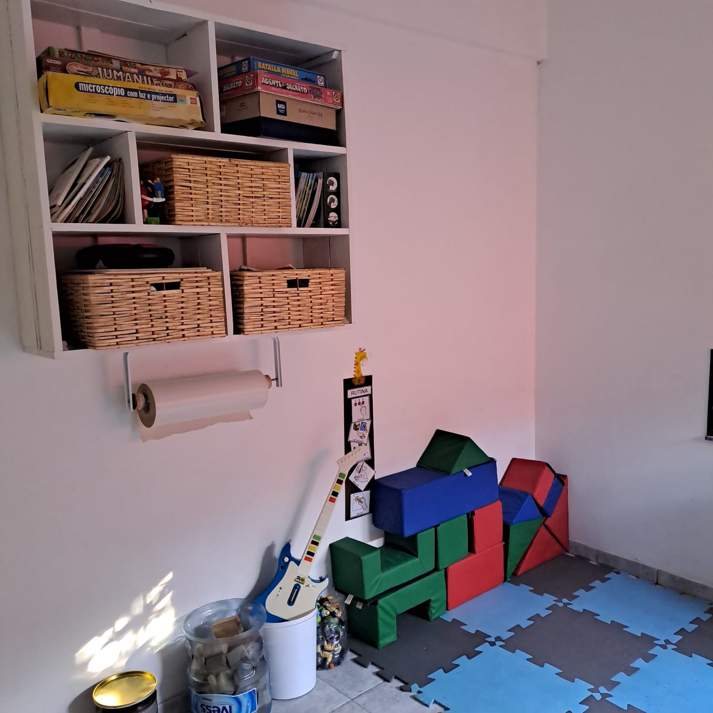
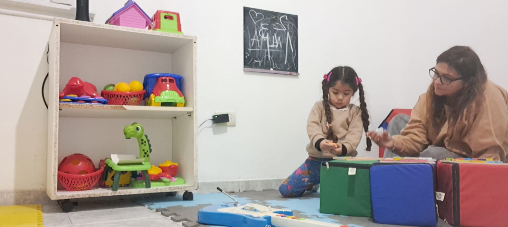
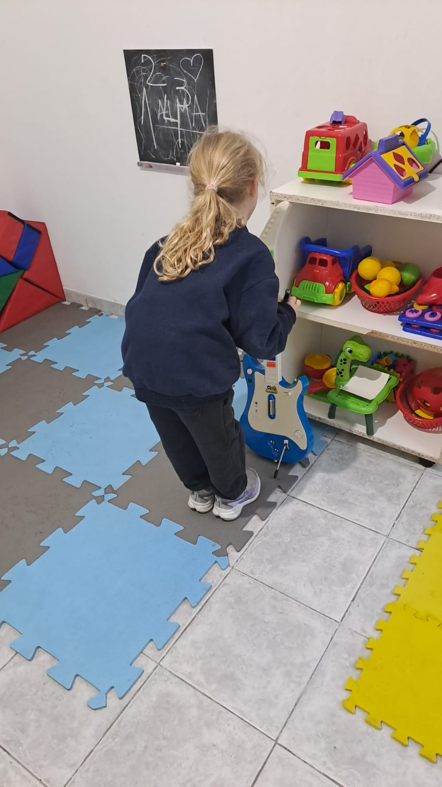

Niños y adolescentes
Buscar ayuda para un hijo no siempre es sencillo. Acá no estás solo: te entendemos y te acompañamos paso a paso.
Sin alarmismos. A tu ritmo y al de tu familia.



Cómo ayudamos
Ayuda a tu hijo a comunicarse mejor: lenguaje, pronunciación, comprensión y voz.
Consultar por WhatsAppAcompaña los aprendizajes y hace que la escuela sea un lugar más amable y posible.
Consultar por WhatsAppAyuda a tu hijo a conocer su cuerpo y a expresarse a través del movimiento y el juego libre.
Consultar por WhatsAppUsa la música para que tu hijo se exprese, conecte y comunique de una forma diferente y poderosa.
Consultar por WhatsAppUn espacio propio para que tu hijo o adolescente entienda y exprese lo que siente, con alguien de confianza a su lado.
Consultar por WhatsApp¿Cuándo consultar?
No están para diagnosticar nada: son situaciones cotidianas en las que una consulta puede ayudar. Ante la duda, escribinos y lo vemos juntos.
Escribinos por WhatsApp y coordinamos tu primera consulta, para conocernos sin compromiso.
Reservá tu primera consulta